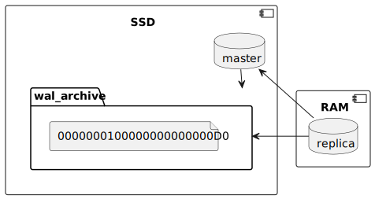

PostgreSQL + tmpfs
I have heard a couple of times that you use Temporary File System (tmpfs) to store data in volatile memory instead of persisting data to your storage device. Intuitively you assume that this will always give us BLAZINGLY FAST IO, right?
1. Context
Say you have some small database (<500MB) and the workload on such database leans heavily on read side of operations.
I thought to myself, what if we spin a read-only replica via streaming
replication with tmpfs?
Something like this:

2. Setup
Creating the master database.
As postgres user:
mkdir --parents /var/lib/postgres/16/wal_archive # Create database initdb --auth-local=trust /var/lib/postgres/16/master # Helper function to edit postgresql.conf function set_prop() { \ sed --regexp-extended \ --in-place \ "s,^#$1.*?$,$1 = $2,gI" \ /var/lib/postgres/16/master/postgresql.conf; \ } # Edit relevant postgresql.conf properties set_prop wal_level replica set_prop archive_mode on set_prop archive_command "'test ! -f /var/lib/postgres/16/wal_archive/%f \&\& cp %p /var/lib/postgres/16/wal_archive/%f'" set_prop restore_command "'cp /var/lib/postgres/16/wal_archive/%f %p'" set_prop archive_cleanup_command "'pg_archivecleanup /var/lib/postgres/16/wal_archive %r'" set_prop primary_conninfo "'host=localhost port=5432 user=replicator'" # Start RDBMS pg_ctl --pgdata=/var/lib/postgres/16/master \ --log=/var/lib/postgres/16/master/log \ start # Create replication user createuser --replication replicator
Creating the replica with tmpfs
As root:
mkdir --parents /mnt/ramdisk
mount --types tmpfs --options='size=8192m,mode=0700' tmpfs /mnt/ramdisk
chown --recursive postgres:postgres /mnt/ramdisk
As postgres:
pg_basebackup --write-recovery-conf \ --pgdata=/mnt/ramdisk # Start the tmpfs replica on port 5433 pg_ctl --pgdata=/mnt/ramdisk \ --options='-c port=5433' \ --log=/mnt/ramdisk/log \ start
3. Benchmark
First, generate some data on the master instance as the postgres user:
pgbench --port=5432 \ --initialize \ --foreign-keys \ --scale=30 \ postgres
see: https://www.postgresql.org/docs/current/pgbench.html
How many records did this generate?
select to_char(count(*), '999,999,990') as accounts from pgbench_accounts;
| accounts |
|---|
| 3,000,000 |
We will be using the select-only built-in script for the benchmarks:
-- select-only: <builtin: select only> \set aid random(1, 100000 * :scale) SELECT abalance FROM pgbench_accounts WHERE aid = :aid;
Now, for some action, run as the postgres user:
# change port to 5433 to run against the replica database pgbench --port=5432 \ --time=60 \ --client=100 \ --jobs=3 \ --select-only \ --no-vacuum \ postgres
Against the master instance:
pgbench (16.1) transaction type: <builtin: select only> scaling factor: 30 query mode: simple number of clients: 100 number of threads: 3 maximum number of tries: 1 duration: 60 s number of transactions actually processed: 5453634 number of failed transactions: 0 (0.000%) latency average = 1.100 ms initial connection time = 74.276 ms tps = 90905.785932 (without initial connection time)
Against the replica instance:
pgbench (16.1) transaction type: <builtin: select only> scaling factor: 30 query mode: simple number of clients: 100 number of threads: 3 maximum number of tries: 1 duration: 60 s number of transactions actually processed: 5506013 number of failed transactions: 0 (0.000%) latency average = 1.089 ms initial connection time = 74.259 ms tps = 91793.918172 (without initial connection time)
Well, that is a surprise (for me at least). I was expecting the
tmpfs to outperform the master database by a moderate/large
margin. It seems the PostgreSQL + Operating System (OS) caches are
doing a great job.
Let's try with a slightly bigger dataset (10x bigger).
pgbench --port=5432 \ --initialize \ --foreign-keys \ --scale=300 \ postgres
Let's check the master database size:
select relname , pg_size_pretty(pg_relation_size(cl.oid)) as "size" from pg_class cl where cl.relnamespace = 'public'::regnamespace order by pg_relation_size(cl.oid) desc
| relname | size | |-----------------------+---------| | pgbench_accounts | 3842 MB | | pgbench_accounts_pkey | 643 MB | | pgbench_tellers | 136 kB | | pgbench_tellers_pkey | 88 kB | | pgbench_branches_pkey | 16 kB | | pgbench_branches | 16 kB | | pgbench_history | 0 bytes |
Let's run again the select-only benchmarks! Against the master
instance:
pgbench (16.1) transaction type: <builtin: select only> scaling factor: 300 query mode: simple number of clients: 100 number of threads: 3 maximum number of tries: 1 duration: 60 s number of transactions actually processed: 5146134 number of failed transactions: 0 (0.000%) latency average = 1.165 ms initial connection time = 86.478 ms tps = 85832.914187 (without initial connection time)
and against the replica instance:
pgbench (16.1) transaction type: <builtin: select only> scaling factor: 300 query mode: simple number of clients: 100 number of threads: 3 maximum number of tries: 1 duration: 60 s number of transactions actually processed: 5150581 number of failed transactions: 0 (0.000%) latency average = 1.164 ms initial connection time = 76.838 ms tps = 85874.008596 (without initial connection time)
Well, our PostgreSQL instances have the default configuration mostly,
which means 128 MB of shared buffers. Clearly, it is not enough cache
to perform on par with the tmpfs replica, considering the dataset
size of ~4.5 GB. Perhaps if I drop my OS page cache?
As root:
sync; echo 1 > /proc/sys/vm/drop_caches
Benchmark once again versus the master instance:
pgbench (16.1) transaction type: <builtin: select only> scaling factor: 300 query mode: simple number of clients: 100 number of threads: 3 maximum number of tries: 1 duration: 60 s number of transactions actually processed: 2037721 number of failed transactions: 0 (0.000%) latency average = 2.943 ms initial connection time = 84.288 ms tps = 33976.877020 (without initial connection time)
Aha! About a third of the transactions per second (TPS).
Let's run two more times in order and watch the OS cache do its job:
pgbench (16.1) transaction type: <builtin: select only> scaling factor: 300 query mode: simple number of clients: 100 number of threads: 3 maximum number of tries: 1 duration: 60 s number of transactions actually processed: 4475925 number of failed transactions: 0 (0.000%) latency average = 1.341 ms initial connection time = 70.050 ms tps = 74598.040075 (without initial connection time)
pgbench (16.1) transaction type: <builtin: select only> scaling factor: 300 query mode: simple number of clients: 100 number of threads: 3 maximum number of tries: 1 duration: 60 s number of transactions actually processed: 5070696 number of failed transactions: 0 (0.000%) latency average = 1.183 ms initial connection time = 79.571 ms tps = 84538.387397 (without initial connection time)
Ok, now we are back at our starting TPS.
4. Closing thoughts
I don't know anything about other platforms such as Windows and MacOS (well, I know almost nothing about Linux too…), so I will emit my thoughts with a Linux + PostgreSQL combo in mind.
For long-running applications, it appears to be better to just let
PostgreSQL and Linux handle caching. While you can still benefit from
a steady number of TPS using tmpfs or ramfs, I would argue that it
is probably easier to just have a normal setup.
Now, for short-lived applications, such as running your integration tests, it may be an explendid option. I shall explore this topic in a later entry to this blog.
Also, please, tune your RDBMS. If you are clueless like me, the bare minimum can be found here: https://pgtune.leopard.in.ua.
If you want to contact me about this post, do so via this discussion.